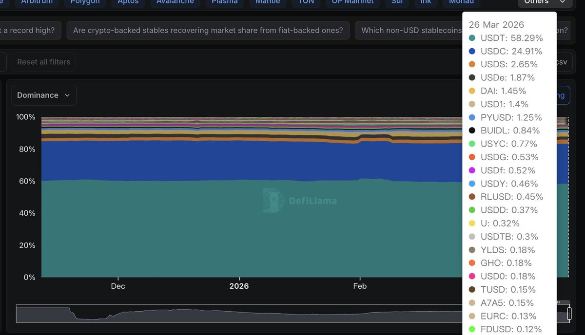

Aoi M
@aoim33
看来我从一开始大一的时候就换 USDC 的策略是正确的

小塞
@EvanCrypto17
感觉，Tether 是真急了。
聘请四大审计自己 USDT 的储备金，虽然没说是谁，但态度是明确的，快来看，“我们是安全的，我们没有问题”，但现在知道错了，为时已晚......
USDT 的多重历史遗留问题，让其无法吃到这波美国政策福利，把全球最大的一个市场拱手让给 USDC。
历史上，也是 2017 https://t.co/Ml7YyGMiiV